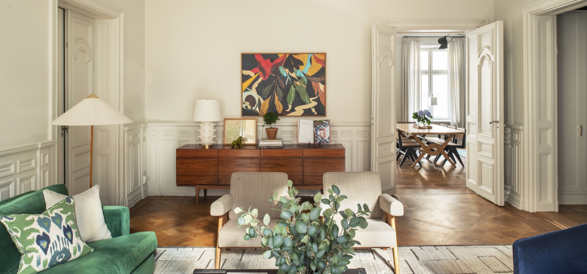
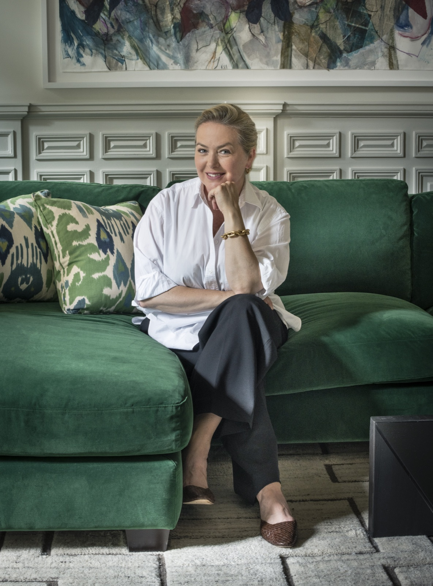

Interior design, Stockholm
Featured in Sköna Hem · Leva & Bo
Kristina Lifors Interior Design is a small boutique interior design firm in Stockholm, specializing in turn key interior design installations ranging from full renovation to final decoration.
Latest projects


The studio
Kristina Lifors worked with Brian J. McCarthy Inc. in New York, working on apartments in Manhattan, summer retreats in the Hamptons and a private home in Bel Air. After nine years in New York she moved back to Stockholm and opened her own studio.
Today the studio designs turn-key residential interiors, from full renovation to final decoration. Our projects have been published in Sköna Hem and Leva & Bo.
Planning a renovation or a new home?
Tell us about your project and we'll be in touch.
Let's get in touch